I'm an astrophysicist working at the intersection of cosmology and machine learning. I hold an M.Sc. in Physics from McGill University, where I modeled the global 21cm signal to search for hints of non-standard physics in the early universe. I'm now a Ph.D. student in Astronomy at UC Riverside, where I build deep learning models that sharpen low-resolution galaxy spectra into something instruments alone couldn't capture.
Before any of that, I was an undergraduate at Sharif University of Technology in Tehran, classifying variable stars with machine learning and falling in love with the idea that data, patiently modeled, can tell you the shape of things too far away to touch.
Outside of research, I'm usually planning the next road trip — national parks, long drives, anywhere I haven't pulled over before. I started taking pictures with a Fujifilm Instax Mini 12 and have since graduated to a Kodak AstroZoom, but the habit's the same: stop the car, look properly, take the shot.
Low-resolution spectra from JWST/NIRSpec's prism (R∼30–300) blend together key rest-frame optical lines — Hα, Hβ, [OIII]λ5007, [OII]λ3727 — past the point where dust attenuation, metallicity, and ionization state can be read off directly. Grating follow-up resolves them, but it's expensive and only available for a fraction of targets. I built a three-stage transformer pipeline (which I call SR2) that takes a low-resolution prism spectrum and reconstructs it at roughly 10× higher resolving power (R∼100 → R∼1000), trained on 1,187 paired prism/grating observations from the JADES program.
The pipeline first performs a coarse convolutional super-resolution pass, then infers a redshift from that intermediate reconstruction, then applies a physics-informed residual correction that uses self-attention across emission-line tokens to learn how lines relate to one another, alongside a convolutional branch that handles the continuum. On held-out test spectra it reaches noise-limited residuals across most of the spectral range and successfully deblends features — like the [OIII]λλ4959,5007 doublet — that are completely unresolved at prism resolution, with meaningful signal-to-noise improvements on all four diagnostic lines.
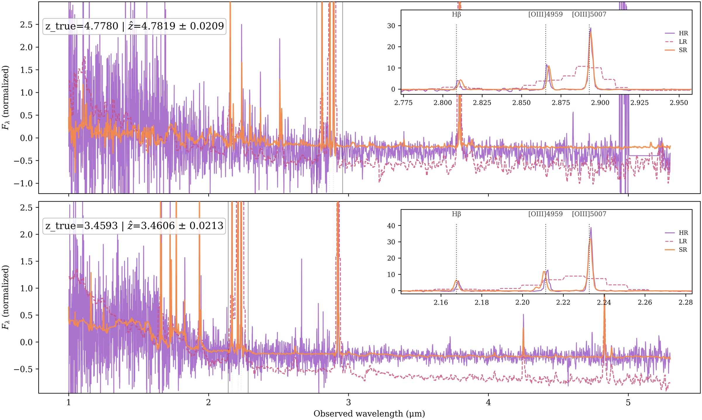
Example galaxy spectra from the held-out evaluation set, showing the low-resolution prism input (red dashed), the high-resolution grating target (purple), and the super-resolved output (orange) across 1–5 μm. Insets zoom in on emission-line regions where the model successfully deblends features—such as the [OIII]λλ4959,5007 doublet—that are completely unresolved at prism resolution.
I've since stress-tested SR2 against seven classical deconvolution methods (Wiener, Tikhonov, total-variation, Richardson–Lucy, wavelet-sparse, and a redshift-informed matched filter) on the same 1,187-spectrum set, to find out exactly where the deep-learning advantage is real versus where it's an illusion of denoising. SR2 wins decisively on global fidelity (30% lower error than the best classical method) and on line-width recovery (the smallest FWHM bias of any method, on every line) — genuine super-resolution, not just noise suppression. But the comparison also surfaced a real limitation: SR2 is the worst method of the eight for preserving flux ratios like the Balmer decrement and [OIII]/Hβ, because it denoises Hα more aggressively than the fainter lines. That matters, because those ratios are exactly what astronomers use to measure dust attenuation and ionization state. The practical takeaway is that SR2 is the right tool for detecting and characterizing line shapes, but flux-ratio science still needs either classical reconstructions or a calibration step on top of the network's output. I'm currently extending the architecture to fix this, and separately toward a multi-modal framework that fuses photometric and spectroscopic data for cross-modal inference.
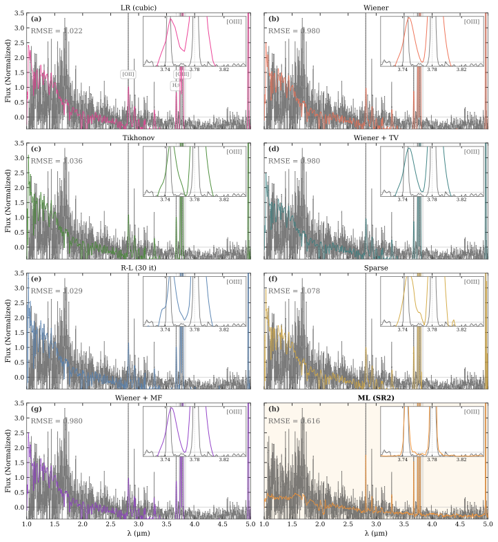
All eight reconstruction methods applied to a held-out JADES spectrum at z = 6.55. Each panel shows the reconstruction (colored) against the high-resolution reference (gray). Insets zoom into the [OIII]λλ4959,5007 doublet: classical methods leave it blended or introduce ringing, while SR2 resolves both components. The SR2 RMSE (0.616) is 37% lower than the best classical method.
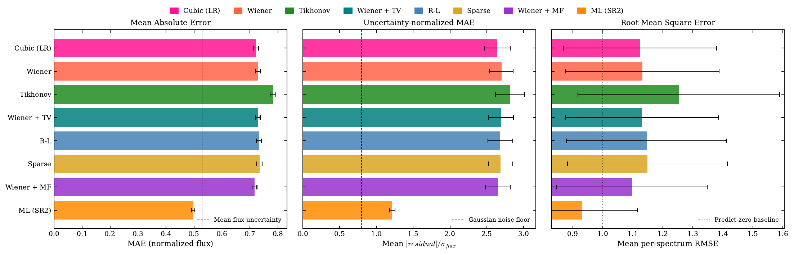
Global reconstruction fidelity across all eight methods on 1,187 test spectra. Left: mean absolute error. Middle: uncertainty-normalized MAE relative to the Gaussian noise floor. Right: per-spectrum RMSE. SR2 achieves the lowest error on every metric, with a 30% MAE reduction over the best classical baseline.
The next direction is moving SR2 beyond JWST entirely: we're working on transferring what the model learned on NIRSpec prism/grating pairs to the Nancy Grace Roman Space Telescope and Euclid, two upcoming wide-field missions that will produce enormous volumes of low-resolution slitless spectroscopy with little to no high-resolution follow-up to train against. The open question is how much of SR2's physics-informed prior — the emission-line relationships it learned from JWST — carries over to a different instrument, a different wavelength coverage, and a different survey strategy, and how to adapt the model where it doesn't.
Advised by Bahram Mobasher & Shoubaneh Hemmati — UC Riverside
21cm Cosmology · M.Sc. ThesisSept 2021 — Dec 2023
Parameter estimation of the global 21cm signal
The global 21cm signal is one of the few direct observational windows into the period between the end of the cosmic dark ages and the formation of the first stars and galaxies — it's sensitive to the density and temperature of neutral hydrogen at that time, which means any deviation from what the standard cosmological model predicts could be a sign of new physics: cosmic strings, exotic particle interactions, unconventional dark matter candidates.
My thesis built a parameter estimation pipeline combining Markov Chain Monte Carlo with the Levenberg–Marquardt algorithm to recover the best-fit astrophysical parameters of the 21cm curve from theoretical models generated with Accelerated Reionization Era Simulations (ARES), then validated the approach against real data from the EDGES experiment. The literature review underpinning it covers the physical mechanisms that shape the signal, how non-standard physics would imprint on it, and the practical difficulties — foreground removal especially — that make this signal so hard to observe in the first place. The resulting best-fit parameters are meant to help constrain future theoretical models and set realistic precision targets for the next generation of experiments hunting for these non-standard effects.
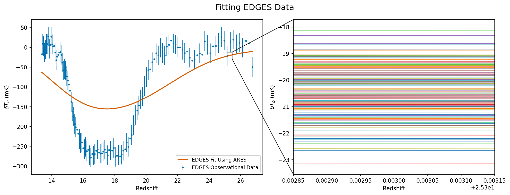
Fitting results on EDGES data. Left: the half-amplitude EDGES observation (blue dotted) with the best-fit curve (red) from our MCMC pipeline. The significant discrepancy between the fit and observed data highlights the difficulty of reproducing the EDGES signal with standard physics alone. Right: zoomed view showing the two-sigma confidence interval (8,780 curves), illustrating the tightness of the fit uncertainty.
Advised by Jonathan Sievers & Oscar Hernandez — McGill University
Applied KNN, random forest, and CNN models to classify variable stars in the OGLE dataset, working through the challenges of significant class imbalance.
Advised by Sadegh Raeisi & Sohrab Rahvar — Sharif University of Technology
Unraveling Non-Standard Physics Through the Global 21cm Signal
Talk · SUT Cosmology Seminar — Sharif University of Technology
Mar 2023
Parameter Estimation of the Global 21cm Signal
Poster · Cosmology on Safari 2023 — Hluhluwe, South Africa
Oct 2022
Clarifying the Effects of Non-Standard Physics on the Global 21cm Signal
Talk · McGill Radio Lab Meetings — McGill University
May 2022
Effects of Non-Standard Physics on 21cm Signal
Talk · McGill Early Universe Cosmology Meetings — McGill University
04 — Photography
What I see when I'm not looking at spectra.
It started with a Fujifilm Instax Mini 12 and turned into a Kodak AstroZoom habit. I like driving, road trips, national parks, and any excuse to pull over for a view — this is a running log of where that's taken me, mostly around California so far.
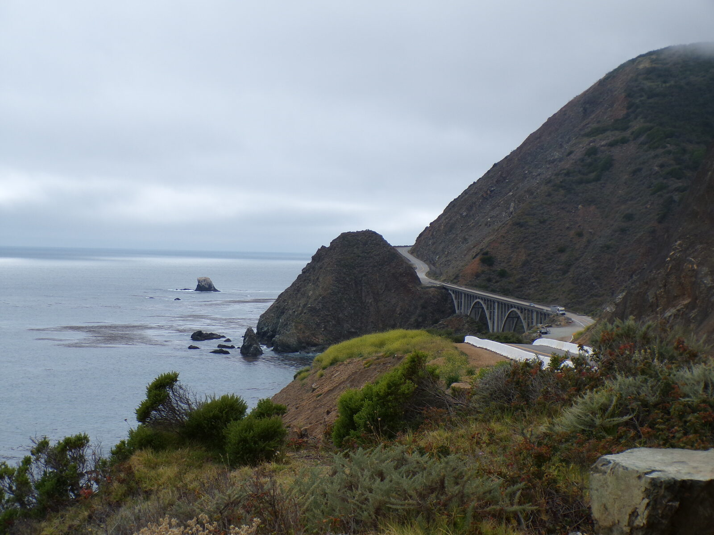
Highway 1, California
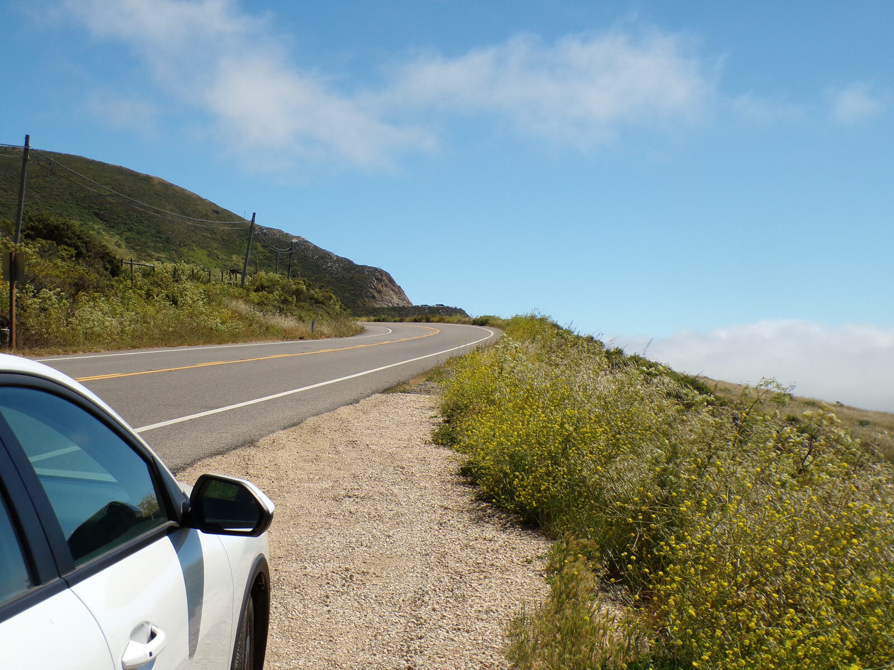
Highway 1, California
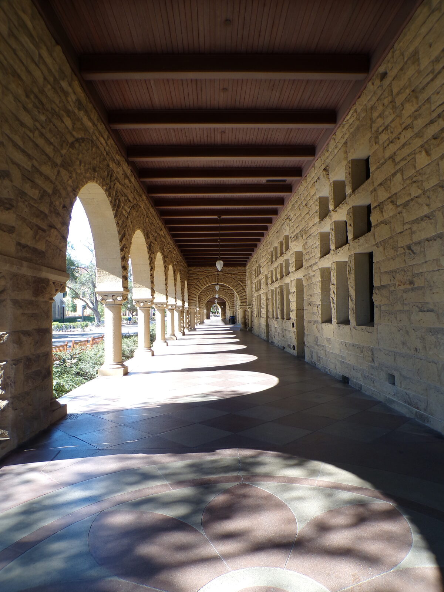
Stanford University
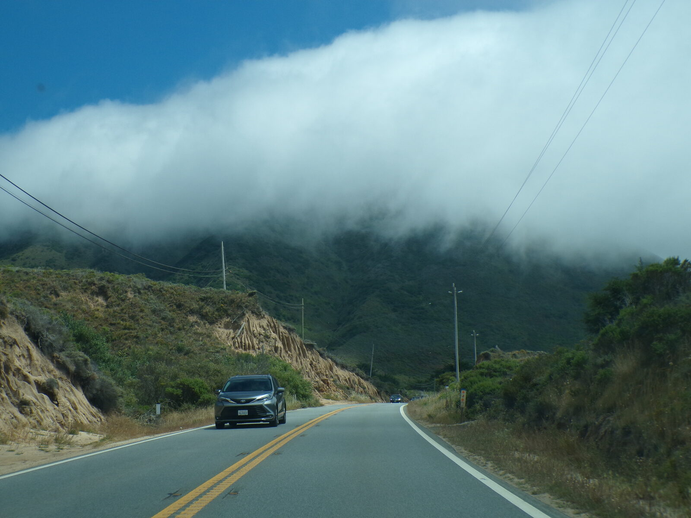
Highway 1, California
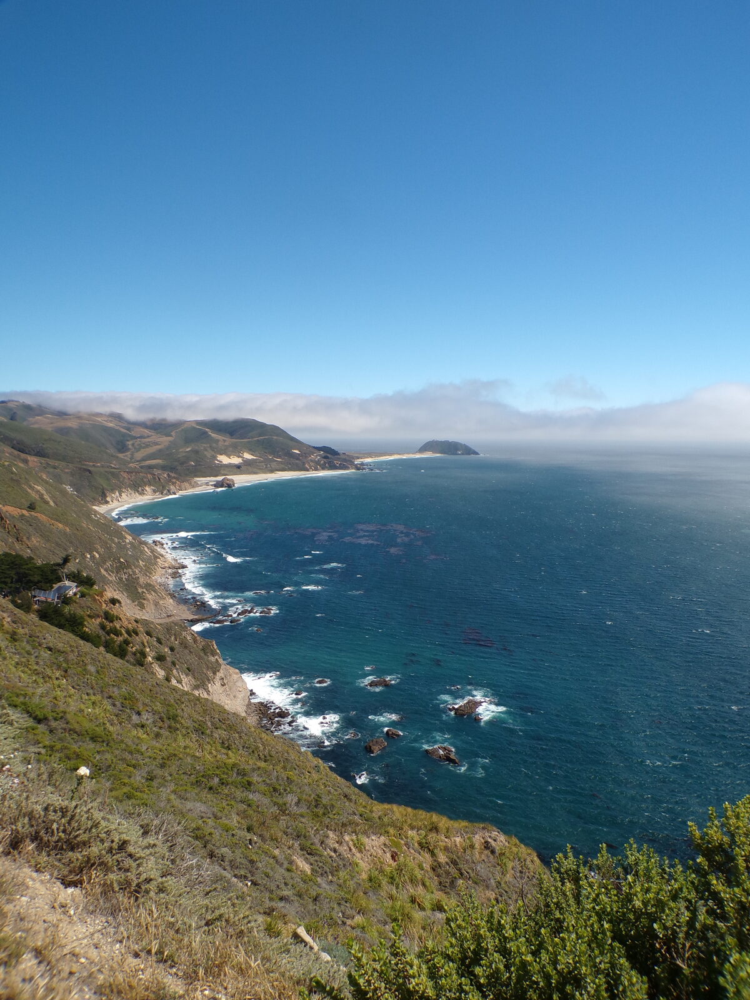
Highway 1, California
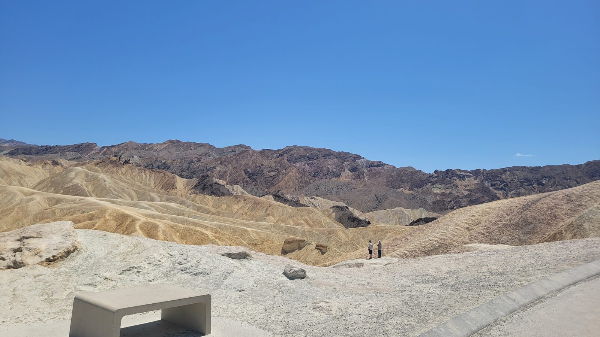
Death Valley National Park
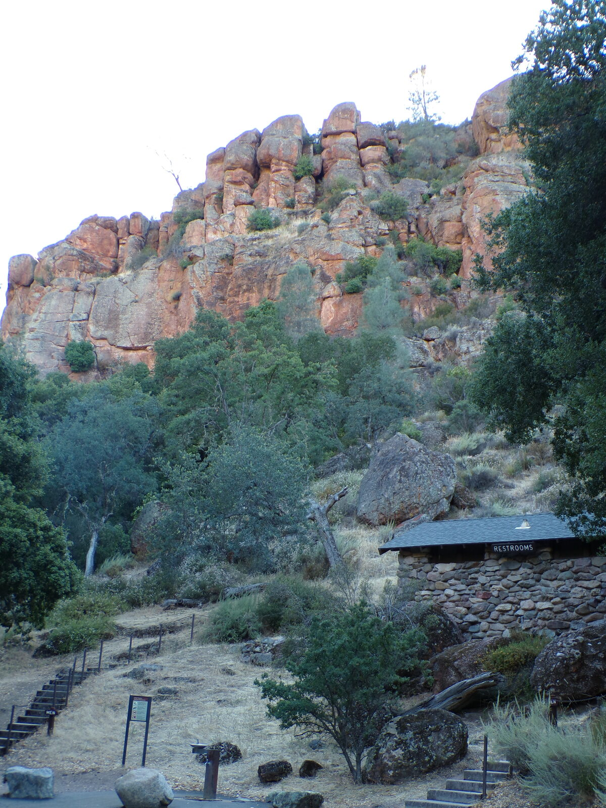
Pinnacles National Park
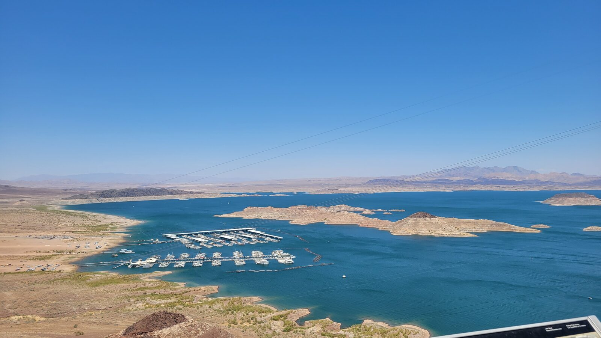
Lake Mead National Recreation AreaHoover Dam, Nevada/Arizona